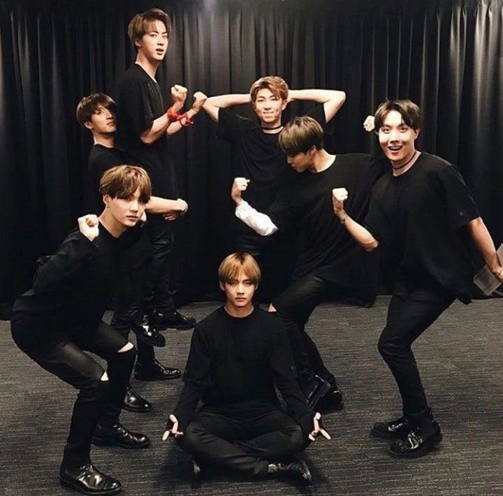
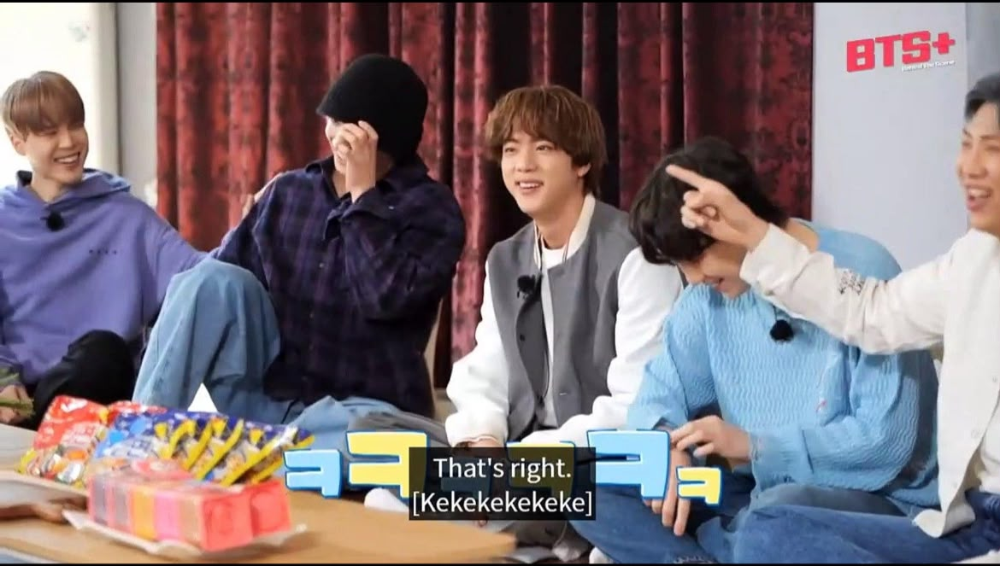

Introduction
Kim Seok-jin, born on December 4, 1992, popularly known by his stage name Jin, is a South Korean singer, songwriter, and actor. He is the oldest member of the K-pop group BTS. Also known by various names like 'World Wide Handsome(WWH)', 'Pink Princess', 'Moon', 'Kpop's Silver Voice' and many more, he made his debut as one of the bands four vocalists on June 13,2013 after being scouted by BigHit Entertainment. He serves as the group's main vocalist and visual. Jin has significantly contributed to the group's success with his powerful vocals and charming stage presence. He was regarded as being the face/visual of BTS and after the 2017 Billboard awards he became unofficially known as “third one from the left”. His strong work ethic has enabled him to achieve many solo successes. His willingness to embrace even tasks that he finds difficult has contributed to his and the group’s success.
In addition to his work with BTS, Jin has also released solo tracks, releasing songs that showcase his vocal abilities and personal style, He has been recognized for his contributions to music and has received numerous awards and accolades. And he has also been recognized for his acting skills in various television dramas. He is known for his warm personality, sense of humor, and dedication to his craft, making him a beloved figure among fans worldwide. His contributions to BTS's music and performances have helped solidify the group's status as one of the leading acts in the global music industry. Jin is a talented artist who has made a significant impact on the music industry and continues to inspire fans around the world with his music and message. He also ventured into businesses like creating the Korean premium liquor brand 'IGIN', and opening a Japanese-style restaurant in Seoul called Otsu Seiromushi with his brother in 2018.
Early Life & Aspirations
Kim Seokjin was born on December 4, 1992, in Gyeonggi Province, South Korea. Before becoming a singer, Jin dreamed of pursuing a career in acting. His interest in films and dramas eventually led him to study Film Studies at Konkuk University, where he graduated on February 22, 2017.
During his university years, Jin's life took an unexpected turn when he was approached by a Big Hit Entertainment casting employee while walking down the street. Initially interested in acting rather than becoming an idol, he accepted the opportunity to audition and was subsequently recruited by the company.
Before his debut in BTS, Jin was actively involved in modeling, particularly for the cosmetics brand Etude House Korea. He was street-casted by Big Hit Entertainment and modeled for their BB cream, showcasing his looks even before his rise to fame with BTS. His modeling career began in 2013, and he quickly gained recognition for his stunning visuals, which contributed to his status as a "Visual King" in the industry.

The Unexpected Idol

Unlike several of his future bandmates, Jin had no formal training in singing or dancing before joining Big Hit. His recruitment was largely influenced by his appearance and the potential the company saw in him, but his journey would eventually become much more than a visual role. His acting background gave him strong facial expressions and charisma on camera, skills that became a major asset during music videos and live stages.
Jin joined Big Hit in 2011 as its fourth BTS trainee. Despite initially entering the company with an acting background, he began learning singing and dancing from the ground up in preparation for his debut as a musician. His transition from aspiring actor to idol was particularly challenging because he had to develop musical and performance skills while adapting to the demanding training system. On 3rd June 2013 Jin was officially introduced as a member of BTS, and along with the other members Jin officially debuted on 13th June 2013.
Jin's Musical Contributions
His Vocal Colour, Emotional Delivery & Growth as a Performer
Jin's voice is distinguished by its clear, bright tone and emotionally expressive delivery. His vocal contributions frequently bring warmth and intensity to BTS's melodic sections, particularly in songs that explore vulnerability, longing and personal reflection. His ability to deliver emotionally charged high notes has become an important part of his musical identity. Songs such as Epiphany, Crystal Snow and The Astronaut showcase his vocal expression and ability to communicate emotion through music.
Jin's development as a performer reflects years of dedication to improving skills he initially lacked. From learning choreography as a trainee to maintaining vocal stability during demanding live performances, his progress demonstrates his willingness to challenge himself. Even when faced with physical difficulties, he has continued to approach performances with determination, including returning to the stage following shoulder surgery in 2022.
Song Highlights

Epiphany
Is a deeply personal song that explores Jin’s journey toward self-love, self-acceptance and the realization that loving oneself is just as important as loving others.

Crystal Snow
Showcases Jin’s delicate yet expressive vocal delivery, highlighting his ability to convey tenderness, longing and emotional vulnerability through subtle vocal nuances.

The Astronaut
Is a heartfelt song that captures Jin’s warmth, sincerity and emotional connection with BTS and ARMY, serving as a beautiful expression of love, gratitude and the promise of staying together.
The Heart of BTS
Beyond his musical contributions, Jin has played an important role in maintaining the group's emotional atmosphere. His humour, playful personality and ability to make others laugh have frequently helped lighten stressful situations. His nurturing side has also been evident throughout BTS's journey, particularly in the way he looks after the members and encourages them to eat and take care of themselves. Often balancing the responsibilities of the eldest member with the playful energy of the youngest, Jin has developed a unique place within BTS as a dependable presence who can offer both comfort and laughter.
He contributes to BTS's emotional bond through his ability to lighten difficult moments, encourage his members and create an atmosphere where they can feel comfortable being themselves. His playful personality, selfless gestures and genuine affection for the members make him an important source of emotional support, while his maturity and quiet consideration often shine through beneath his humor.



TMI
- Jin LOVES his face (I do too...)
- In the early days of BTS, He took (stole...) his mom's pots to cook for the members. He was known as the mom of the group and still is (to me at least...)
- Pink is his favorite color. That's how he got the nickname "Pink Princess"
- He is known as the "Original Maknae" of BTS (he has a lot of nicknames...)
- He was street-casted by a Big Hit casting agent on his way to school
- Jungkook is his favorite child (It's so obvious...)
Made with love for BTS and ARMY